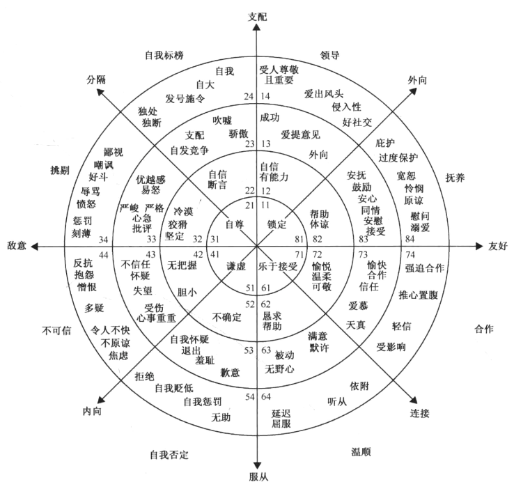
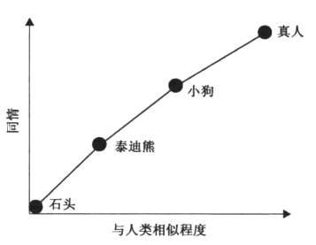
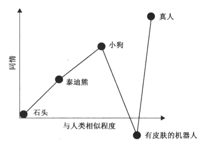

世界中的角色
化身
由玩家在游戏里控制的角色是一个拥有神奇力量的角色，因此我们赋予它一个特殊的名字：化身。
85号透镜：化身
- 我创造的化身是不是一个能与玩家引起共鸣的理想型？
- 我创造的化身有没有符号化的特性来让玩家将自己投射到那个角色中去？
创造令人信服的游戏角色
- 1. 列出角色的功能
把你准备加入游戏的角色以列表的形式写下来，然后观察他们是如何相互联系的。
86号透镜：角色功能
- 我需要这些角色行使哪些功能？
- 我已经想象了哪些角色？
- 某角色与某功能是否很好地对应？
- 能否让某一角色行使多个功能？
- 我是否需要改变一下角色设定，来让它与功能对应得更好？
- 我需要新的角色吗？
- 2. 定义并且运用角色的特征
列出所有可以用来定义角色的事物，最后简化成珍上小清单，写下能够概括角色的特征。选取最具代表性的特征，塑造丰满的形象。
87号透镜：角色特征
- 是什么特征定义了我的角色？
- 这些特征是如何表现在世界、角色的举止和容貌上的？
- 3. 运用人际关系环状图

88号透镜：人际关系环状图
选取一名角色进行分析，将他放到原点位置，思考其他角色相对于该角色所处的位置。
- 图表上是否有间隙？它们为什么会出现？将间隙填上是否有帮助？
- 图表上是否有“极端角色”？如果没有，那么加入“极端角色”是否有帮助？
- 被分析角色的同伴都处于一个分区还是不同分区？如果在不同分区会怎样？
- 4. 创造一个角色网络
为了分析一名角色，写下该角色对其他所有角色的看法。
89号透镜：角色网格
- 角色之间具体怎么看待对方？
- 有没有未解释的人际关系？我如何使用它们？
- 是否有太多相似的关系？它们怎样才能变得不同？
- 5. 运用“地位”
不论何时，只要人们见面或者互动，背后就会有一项协商持续进行。这是我们关于状态的协商，即谁在目前的互动中占据主导地位？地位与你是谁没有关系，而只与你做了什么有关。
地位不仅仅是关于对话的，还关于移动、眼神交流、领域及角色做的事情。这是看待世界的方式。
90号透镜：地位
- 我的游戏里的角色的相对地位级别是什么？
- 他们怎么才能展现出符合其地位的行为？
- 关于地位的冲突很有趣。我的角色怎样争取他们的地位？
- 地位的改变也很有趣。这会发生在我的游戏的哪些环节中呢？
- 我如何给玩家一个表达地位的机会？
- 6. 运用语音的力量
动画电影中，先完成剧本，再配音，再进行角色设计。
游戏中，先进行角色设计与建模，再撰写剧本，再配音。这样使语音的表现力削弱了。
- 7. 运用面部的力量
你必须要有一个玩家能够看到的脸。最重要的是，你应该把注意力集中到你角色的眼睛上。
- 8. 有力的故事能够转变角色
优秀故事的一个显著特点就是其中角色的转变。
检查你的游戏中角色是否有转变潜质的方法，是列一张角色转变表，角色放左边，故事不同环节放表的上边，标记出角色经历转变的环节。思考你的角色会经历何种转变，并在故事里尽力表现出来。
91号透镜：角色转变
我们关注角色转变，因为我们关心这么做之后带来的改变。
- 每一名角色在游戏中会如何转变？
- 我如何将这些变化传达给玩家？我能否使用一种更清楚、更有力的方式？
- 变化足够多吗？
- 变化出人意料吗？有趣吗？
- 这些变化可信吗？
- 9. 让你的角色出人意料
了解表演方法，寻找让角色出乎玩家意料的方法。
- 10. 避免恐怖谷
如果一样东西看起来越接近人类，人类对它就会越有同情心。

如果非人类的东西太“人类”，人们会突然对它们反感————“恐怖谷”。

我们见到那些与人几乎没有差别的“东西”时，我们的大脑会将它们认定为“病态的人”，而它们出现在我们周围时可能会带来危险。
角色无疑能让一个世界更加有趣，但是一个世界之所民成为一个世界，它还需要其他的东西————一个容其存在的地方。